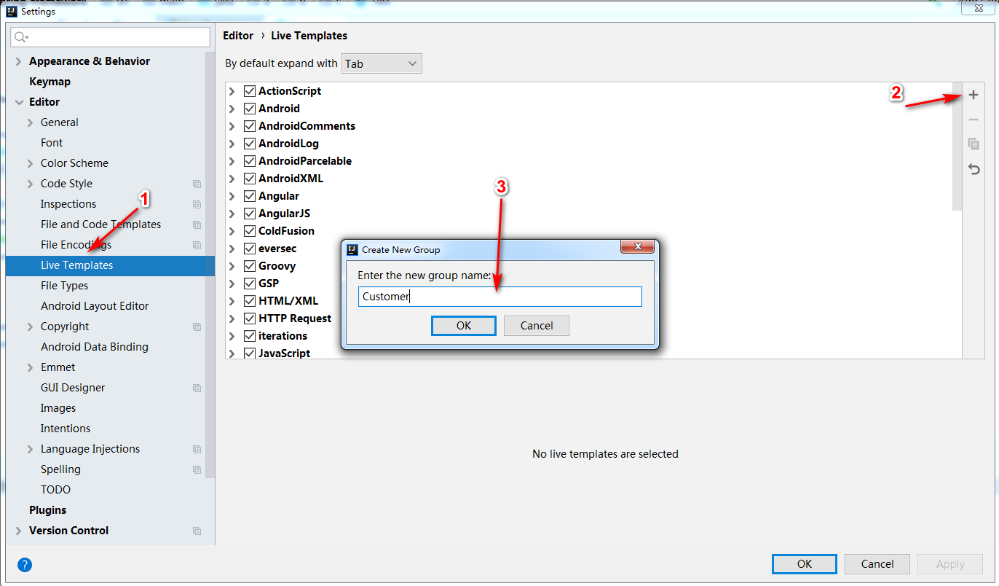
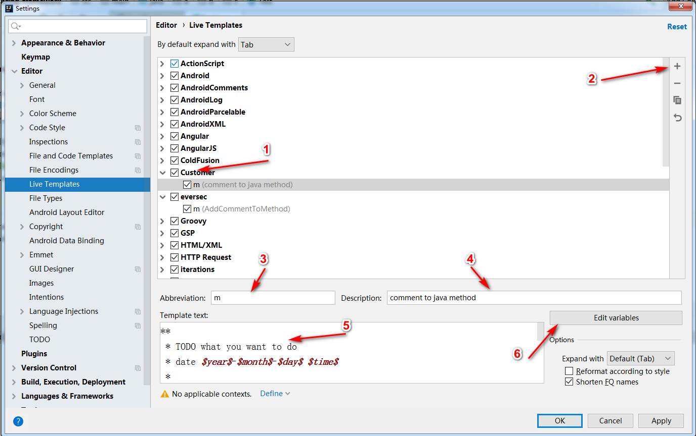

JavaStandard
类头注释
/**
* ${PACKAGE_NAME}@${PROJECT_NAME}
*
* TODO what you want to do?
*
* date ${YEAR}-${MONTH}-${DAY} ${TIME}
*
* @author DingPengwei[www.dingpengwei@foxmail.com]
* @since DistributionVersion
* @version 1.0.0
*/
方法注释
注释内容
**
* TODO what you want to do
* date $year$-$month$-$day$ $time$
*
$params$
$return$
* @author DingPengwei[www.dingpengwei@foxmail.com]
* @since DistributionVersion
*/
参数脚本
groovyScript("if(\"${_1}\".length() == 2) {return '';} else {def result=''; def params=\"${_1}\".replaceAll('[\\\\[|\\\\]|\\\\s]', '').split(',').toList();for(i = 0; i < params.size(); i++) {if(i<(params.size()-1)){result+=' * @param ' + params[i] + ' ' + '\\n'}else{result+=' * @param ' + params[i] + ' '}}; return result;}", methodParameters());
返回值脚本
groovyScript("def returnType = \"${_1}\"; def result = ' * @return ' + returnType; return result;", methodReturnType());
操作过程



CodeStyle
Google规范仓库 导入即可
我的快捷键设置
- DefaultForXWin
- MacOSX10.5+